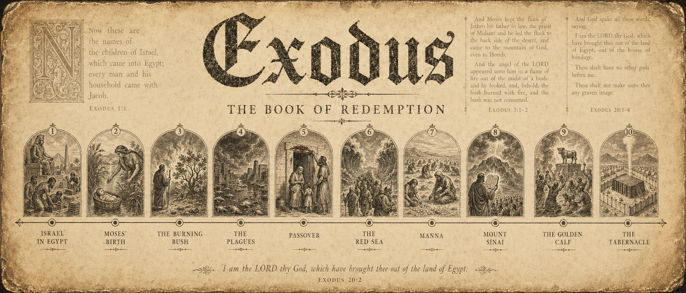

Explore the Bible through maps, people, places, and context.
Bible Mapped helps Christians and seekers follow Scripture through real geography, connected people, book-by-book study, and historical background.

Watch, read, explore, and learn
Start with the way you are curious.
 Maps
Maps
See where Scripture happened.
Trace routes, regions, kingdoms, journeys, and locations across the biblical story.
 Books
Books
Explore the Bible book by book.
Open Genesis, Exodus, the Old Testament, and the New Testament with context close by.
 People
People
Meet the people in the story.
Follow Abraham, Moses, Mary, Paul, and more through their places and moments.
 Places
Places
Understand the locations.
Learn why Eden, Egypt, Jerusalem, Samaria, and other places matter in Scripture.
Featured collection
Walk through the New Testament world.
Start with the regions, cities, journeys, and letters that shaped the story of Jesus, the apostles, and the early Church.

Feeling lost in the Bible?
Ask better questions. Let the map answer with you.
Bible Mapped is built around the questions readers naturally ask when Scripture gets dense: where, who, when, and why it matters.
Exploring a book of the Bible?
Choose a book or testament and keep your bearings.
Book guide
Genesis
Creation, promise, family, land, blessing, and the beginning of Israel's story.

Book guide
Exodus
Deliverance, wilderness, covenant, tabernacle, and God's presence with his people.

Collection
Old Testament
Trace the land, kingdoms, prophets, exile, return, and promises across the Hebrew Bible.

People of Scripture
Follow the story through the people who lived it.
Move from name lists to connected lives. Bible Mapped helps you see biblical people in their places, families, conflicts, callings, and moments.
Explore PeopleWatch
Short visual guides for biblical context.
Read with the map open.
Connect people, places, and timing.
Learn our story
Bible Mapped exists to make context easier to see.
The site brings together maps, people, places, books, and visual study paths so Scripture can be explored with clarity instead of confusion.
About Bible Mapped